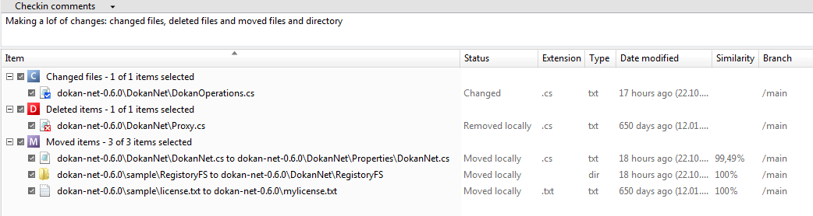

You can now checkin all the changes. Don’t forget to check all items (deleted and moved) and write a comment like: “Making a lot of changes: changed files, deleted files and moved files and directory”.

Figure 1: Moved Directory